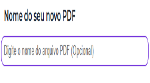

Converta seus arquivos Word, Excel, PowerPoint e imagens para PDF de forma fácil, rápida e gratuita
Converter para PDF
100% GRÁTIS
Seu feedback foi enviado com sucesso! Obrigado por ajudar o Veloify a crescer üíú
Clique aqui para
selecionar arquivos
0%
Arquivos carregados
Nome do seu novo PDF
Converter para PDF serve para padronizar seus documentos (Word, Excel, JPG, PPT) em um formato universal. Garanta que todos abram e visualizem seus arquivos perfeitamente, em qualquer dispositivo. Clique e simplifique!
Clique ou arrasta o arquivo que deseja até aqui.

Digite o nome que deseja para seu documento
Clique no botão "Converter para PDF" para começar converter.